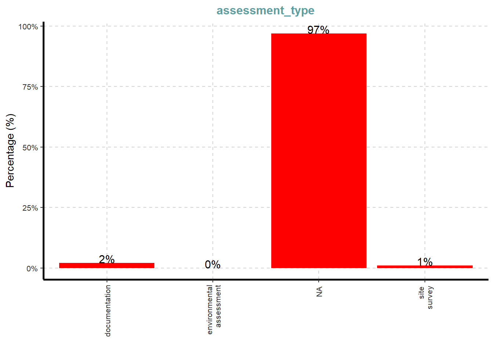
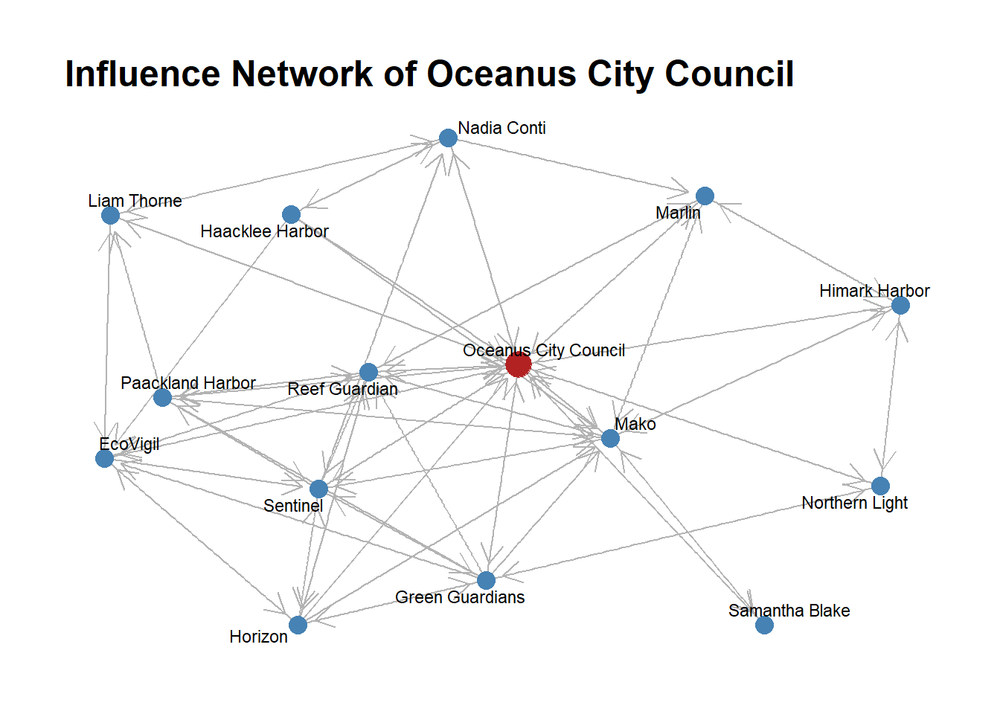
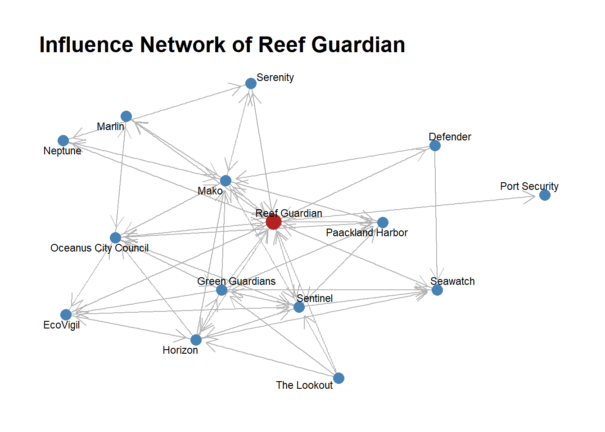

pacman::p_load(
jsonlite,
tidyverse,
SmartEDA,
tidygraph,
ggraph,
lubridate,
dplyr,
patchwork,
purrr,
scales,
RColorBrewer,
plotly,
igraph,
viridis,
forcats,
knitr)Take home Exercise 3
VAST Challenge 2025-Mini-Challenge 3
For the exercise, our group will choose MC 3 as our main topic, the detail background referring to VAST MC3
1.0 Background
Oceanus: From Fishing Nets to Tourism Tensions
Once defined by its fishing traditions, Oceanus has transformed dramatically in the last decade. After a crackdown on illegal fishing, those involved redirected investments toward ocean tourism, creating community friction. When international star Sailor Shift announced plans to film locally, investigative journalist Clepper Jessen uncovered troubling connections around the temporary closure of Nemo Reef. His work exposed expedited approvals and secretive arrangements linking island officials, Sailor’s team, influential local families, and conservationists The Green Guardians—suggesting a story of corruption hiding beneath paradise’s surface.
2.0 Overall Tasks
Clepper has built a knowledge graph from two weeks of intercepted radio communications in Oceanus. Here are the key tasks to be analyzed:
Task 1: Temporal Communication Patterns
Create visual analytics to identify daily patterns in communication timing and analyze how these patterns changed over the two-week observation period
Select a specific entity and determine who influences them based on these patterns
Task 2: Relationship Analysis
Develop visualizations to explore connections between vessels and people
Identify closely associated groups
Determine predominant topics for each group (e.g., environmentalism, Sailor Shift, fishing/leisure vessels)
Task 3: Pseudonym Identification
Expand visualizations to reveal who is using pseudonyms
Identify known pseudonyms (“Boss”, “The Lookout”) and discover additional ones
Account for pseudonyms potentially used by multiple entities
Demonstrate how these visualizations simplify entity identification
Explain how understanding pseudonyms changes interpretation of activities
Task 4: Nadia Conti Investigation
Use visual analytics to provide evidence regarding possible illegal activity by Nadia Conti
Create a visual summary of Nadia’s actions
Assess whether Clepper’s suspicions are justified
Each task builds on previous analysis to uncover the potential corruption surrounding the Nemo Reef closure and connections between officials, Sailor Shift’s team, influential families, and The Green Guardians.
3.0 Setting up
3.1 Loading packages
| Package | Description |
|---|---|
| jsonlite | JSON parsing and generation |
| tidyverse | Core data-science suite (dplyr, ggplot2, etc.) |
| SmartEDA | Automated exploratory data analysis |
| tidygraph | Tidy tools for graph-data manipulation and analysis |
| ggraph | Grammar-based graph/network visualization |
| lubridate | Easy parsing and manipulation of dates/times |
| dplyr | Grammar of data manipulation (filter, mutate, etc.) |
| patchwork | Combine multiple ggplots into a unified layout |
| purrr | Functional programming tools for lists and vectors |
| scales | Scale functions for visualization (axis breaks, formatting) |
| RColorBrewer | Color palettes for maps and plots |
| plotly | Interactive web-based charts |
| igraph | Network analysis and graph algorithms |
| viridis | Color scales for scientific visualization (colorblind-friendly) |
| forcats | Tools for working with categorical variables (factors) |
| knitr | Dynamic report generation and literate programming |
3.2 Loading data
MC3_graph <- fromJSON("data/MC3_graph.json")
glimpse(MC3_graph)List of 5
$ directed : logi TRUE
$ multigraph: logi FALSE
$ graph :List of 4
..$ mode : chr "static"
..$ edge_default: Named list()
..$ node_default: Named list()
..$ name : chr "VAST_MC3_Knowledge_Graph"
$ nodes :'data.frame': 1159 obs. of 31 variables:
..$ type : chr [1:1159] "Entity" "Entity" "Entity" "Entity" ...
..$ label : chr [1:1159] "Sam" "Kelly" "Nadia Conti" "Elise" ...
..$ name : chr [1:1159] "Sam" "Kelly" "Nadia Conti" "Elise" ...
..$ sub_type : chr [1:1159] "Person" "Person" "Person" "Person" ...
..$ id : chr [1:1159] "Sam" "Kelly" "Nadia Conti" "Elise" ...
..$ timestamp : chr [1:1159] NA NA NA NA ...
..$ monitoring_type : chr [1:1159] NA NA NA NA ...
..$ findings : chr [1:1159] NA NA NA NA ...
..$ content : chr [1:1159] NA NA NA NA ...
..$ assessment_type : chr [1:1159] NA NA NA NA ...
..$ results : chr [1:1159] NA NA NA NA ...
..$ movement_type : chr [1:1159] NA NA NA NA ...
..$ destination : chr [1:1159] NA NA NA NA ...
..$ enforcement_type : chr [1:1159] NA NA NA NA ...
..$ outcome : chr [1:1159] NA NA NA NA ...
..$ activity_type : chr [1:1159] NA NA NA NA ...
..$ participants : int [1:1159] NA NA NA NA NA NA NA NA NA NA ...
..$ thing_collected :'data.frame': 1159 obs. of 2 variables:
.. ..$ type: chr [1:1159] NA NA NA NA ...
.. ..$ name: chr [1:1159] NA NA NA NA ...
..$ reference : chr [1:1159] NA NA NA NA ...
..$ date : chr [1:1159] NA NA NA NA ...
..$ time : chr [1:1159] NA NA NA NA ...
..$ friendship_type : chr [1:1159] NA NA NA NA ...
..$ permission_type : chr [1:1159] NA NA NA NA ...
..$ start_date : chr [1:1159] NA NA NA NA ...
..$ end_date : chr [1:1159] NA NA NA NA ...
..$ report_type : chr [1:1159] NA NA NA NA ...
..$ submission_date : chr [1:1159] NA NA NA NA ...
..$ jurisdiction_type: chr [1:1159] NA NA NA NA ...
..$ authority_level : chr [1:1159] NA NA NA NA ...
..$ coordination_type: chr [1:1159] NA NA NA NA ...
..$ operational_role : chr [1:1159] NA NA NA NA ...
$ edges :'data.frame': 3226 obs. of 5 variables:
..$ id : chr [1:3226] "2" "3" "5" "3013" ...
..$ is_inferred: logi [1:3226] TRUE FALSE TRUE TRUE TRUE TRUE ...
..$ source : chr [1:3226] "Sam" "Sam" "Sam" "Sam" ...
..$ target : chr [1:3226] "Relationship_Suspicious_217" "Event_Communication_370" "Event_Assessment_600" "Relationship_Colleagues_430" ...
..$ type : chr [1:3226] NA "sent" NA NA ...MC3_schema <- fromJSON("data/MC3_schema.json") # didint load
glimpse(MC3_schema)List of 1
$ schema:List of 2
..$ nodes:List of 3
.. ..$ Entity :List of 2
.. ..$ Event :List of 2
.. ..$ Relationship:List of 2
..$ edges:List of 3
.. ..$ description: chr "Connections between nodes in the knowledge graph"
.. ..$ is_inferred: chr "bool"
.. ..$ types :'data.frame': 6 obs. of 5 variables:3.3 Examining the data structure
nodes_tbl <- as_tibble(MC3_graph$nodes)
edges_tbl <- as_tibble(MC3_graph$edges)kable(head(nodes_tbl, 10))| type | label | name | sub_type | id | timestamp | monitoring_type | findings | content | assessment_type | results | movement_type | destination | enforcement_type | outcome | activity_type | participants | thing_collected | reference | date | time | friendship_type | permission_type | start_date | end_date | report_type | submission_date | jurisdiction_type | authority_level | coordination_type | operational_role |
|---|---|---|---|---|---|---|---|---|---|---|---|---|---|---|---|---|---|---|---|---|---|---|---|---|---|---|---|---|---|---|
| Entity | Sam | Sam | Person | Sam | NA | NA | NA | NA | NA | NA | NA | NA | NA | NA | NA | NA | NA | NA | NA | NA | NA | NA | NA | NA | NA | NA | NA | NA | NA | NA |
| Entity | Kelly | Kelly | Person | Kelly | NA | NA | NA | NA | NA | NA | NA | NA | NA | NA | NA | NA | NA | NA | NA | NA | NA | NA | NA | NA | NA | NA | NA | NA | NA | NA |
| Entity | Nadia Conti | Nadia Conti | Person | Nadia Conti | NA | NA | NA | NA | NA | NA | NA | NA | NA | NA | NA | NA | NA | NA | NA | NA | NA | NA | NA | NA | NA | NA | NA | NA | NA | NA |
| Entity | Elise | Elise | Person | Elise | NA | NA | NA | NA | NA | NA | NA | NA | NA | NA | NA | NA | NA | NA | NA | NA | NA | NA | NA | NA | NA | NA | NA | NA | NA | NA |
| Entity | Liam Thorne | Liam Thorne | Person | Liam Thorne | NA | NA | NA | NA | NA | NA | NA | NA | NA | NA | NA | NA | NA | NA | NA | NA | NA | NA | NA | NA | NA | NA | NA | NA | NA | NA |
| Entity | Samantha Blake | Samantha Blake | Person | Samantha Blake | NA | NA | NA | NA | NA | NA | NA | NA | NA | NA | NA | NA | NA | NA | NA | NA | NA | NA | NA | NA | NA | NA | NA | NA | NA | NA |
| Entity | Davis | Davis | Person | Davis | NA | NA | NA | NA | NA | NA | NA | NA | NA | NA | NA | NA | NA | NA | NA | NA | NA | NA | NA | NA | NA | NA | NA | NA | NA | NA |
| Entity | Rodriguez | Rodriguez | Person | Rodriguez | NA | NA | NA | NA | NA | NA | NA | NA | NA | NA | NA | NA | NA | NA | NA | NA | NA | NA | NA | NA | NA | NA | NA | NA | NA | NA |
| Entity | Sailor Shift | Sailor Shift | Person | Sailor Shift | NA | NA | NA | NA | NA | NA | NA | NA | NA | NA | NA | NA | NA | NA | NA | NA | NA | NA | NA | NA | NA | NA | NA | NA | NA | NA |
| Entity | Clepper Jensen | Clepper Jensen | Person | Clepper Jensen | NA | NA | NA | NA | NA | NA | NA | NA | NA | NA | NA | NA | NA | NA | NA | NA | NA | NA | NA | NA | NA | NA | NA | NA | NA | NA |
kable(head(edges_tbl, 10))| id | is_inferred | source | target | type |
|---|---|---|---|---|
| 2 | TRUE | Sam | Relationship_Suspicious_217 | NA |
| 3 | FALSE | Sam | Event_Communication_370 | sent |
| 5 | TRUE | Sam | Event_Assessment_600 | NA |
| 3013 | TRUE | Sam | Relationship_Colleagues_430 | NA |
| NA | TRUE | Sam | Relationship_Friends_272 | NA |
| NA | TRUE | Sam | Relationship_Colleagues_215 | NA |
| NA | TRUE | Sam | Relationship_Colleagues_431 | NA |
| 8 | FALSE | Kelly | Event_Communication_3 | sent |
| 10 | FALSE | Kelly | Event_Communication_443 | sent |
| NA | TRUE | Kelly | Relationship_Friends_272 | NA |
after slpit to nodes and edges, the data shouw 3226 edges and 1159 nodes
4.Initial EDA
It is time for us to apply appropriate EDA methods to examine the data.
In the code chunk below, ExpCatViz() of SmartEDA package is used to reveal the frequency distribution of all categorical fields in nodes_tbl tibble dataframe.
ExpCatViz(data = nodes_tbl,
col = "red")[[1]]
[[2]]
[[3]]
[[4]]
[[5]]
[[6]]
[[7]]
[[8]]
[[9]]
[[10]]
[[11]]
[[12]]
[[13]]
[[14]]
On the other hands, code chunk below uses ExpCATViz() of SmartEDA package to reveal the frequency distribution of all categorical fields in mc3_edges tibble dataframe.
ExpCatViz(data=edges_tbl,
col="lightblue")[[1]]
5.0 Task 1-Clepper found that messages frequently came in at around the same time each day.
Task 1.1: Create visual analytics to identify daily patterns in communication timing and analyze how these patterns changed over the two-week observation period
ggplot(data=nodes_tbl,
aes(y=`type`))+
geom_bar()
ggplot(data=nodes_tbl,
aes(y=`sub_type`))+
geom_bar()
Generate Node Sub-Type Inventory
# Extract unique sub_types for each node type
entities <- sort(unique(nodes_tbl$sub_type[nodes_tbl$type == "Entity"]))
events <- sort(unique(nodes_tbl$sub_type[nodes_tbl$type == "Event"]))
relationships <- sort(unique(nodes_tbl$sub_type[nodes_tbl$type == "Relationship"]))
node_inventory <- list(
Entities = entities,
Events = events,
Relationships = relationships
)List down Type and relevant sub types
for (grp in names(node_inventory)) {
cat("**", grp, "** (", length(node_inventory[[grp]]), "):\n", sep = "")
cat(paste0(" - ", node_inventory[[grp]]), sep = "\n")
cat("\n")
}**Entities** (5):
- Group
- Location
- Organization
- Person
- Vessel
**Events** (11):
- Assessment
- Collaborate
- Communication
- Criticize
- Enforcement
- Fishing
- HarborReport
- Monitoring
- TourActivity
- TransponderPing
- VesselMovement
**Relationships** (9):
- AccessPermission
- Colleagues
- Coordinates
- Friends
- Jurisdiction
- Operates
- Reports
- Suspicious
- Unfriendlybased on the above list, we noticed that based on the task requirement, now we only focus on type=“event” and sub_type =“communication” , next step is to create communication nodes
comm_nodes <-nodes_tbl %>%
filter(type=="Event",
sub_type == "Communication") %>%
select(event_id = id,timestamp)
glimpse(comm_nodes)Rows: 584
Columns: 2
$ event_id <chr> "Event_Communication_1", "Event_Communication_2", "Event_Com…
$ timestamp <chr> "2040-10-01 08:09:00", "2040-10-01 08:10:00", "2040-10-01 08…Define sender and receiver
ggplot(data=edges_tbl,
aes(y=`type`))+
geom_bar()extract data from sender and receiver
sent_edges <-edges_tbl %>% filter(type=="sent")%>%
select(sender = source,event_id=target)
recv_edges <-edges_tbl %>% filter(type=="received")%>%
select(event_id = source,receiver=target)using inner_join to combine sender and receiver
msgs <- sent_edges %>%
inner_join(recv_edges, by="event_id") %>%
inner_join(comm_nodes, by="event_id") %>%
mutate(ts = ymd_hms(timestamp, tz="UTC")) %>%
mutate(date = as_date(ts), hour = hour(ts))visualizing the heat map
heatmap_data <- msgs %>%
count(date, hour) %>%
complete(
date = seq(min(date), max(date), by = "1 day"),
hour = 0:23,
fill = list(n = 0)
)
ggplot(heatmap_data, aes(x=hour, y=date, fill=n)) +
geom_tile(color="white") +
scale_x_continuous(
breaks = 0:23,
expand = c(0,0)
)+
scale_y_date(
breaks = seq(min(heatmap_data$date), max(heatmap_data$date), by = "1 day"),
date_labels = "%b %d",
expand = c(0, 0)
) +
scale_fill_distiller(
name = "Messages",
palette = "Spectral",
direction = 1
) +
labs(
title = "Daily Communication Patterns",
x = "Hour of Day",
y = "Date"
) +
theme_minimal() +
theme(
axis.text.x = element_text(hjust = 0.5),
axis.text.y = element_text(size = 8),
panel.grid = element_blank()
)
Compare the shape of daily rhythm between week 1 and week 2
# Mark Week 1 vs Week 2
msgs <- msgs %>%
mutate(
week = if_else(date <= min(date) + days(6), "Week 1", "Week 2")
)
# Count and normalize within each week
week_patterns <- msgs %>%
count(week, hour) %>%
group_by(week) %>%
mutate(proportion = n / sum(n))
hour_breaks <- seq(min(week_patterns$hour), max(week_patterns$hour), by = 1)
prop_breaks <- seq(
0,
ceiling(max(week_patterns$proportion) * 100) / 100,
by = 0.02
)
ggplot(week_patterns, aes(x = hour, y = proportion, color = week)) +
geom_line(size = 1.2) +
geom_point(size = 3) +
scale_x_continuous(breaks = hour_breaks) +
scale_y_continuous(
breaks = prop_breaks,
labels = percent_format(accuracy = 1)
) +
labs(
title = "Hourly Communication Patterns: Week 1 vs Week 2",
x = "Hour of Day",
y = "Percent of Total Messages"
) +
theme_light(base_size = 12) +
theme(
plot.title = element_text(face = "bold", size = 16, hjust = 0.5),
legend.position = "top",
legend.title = element_blank(),
panel.grid.major = element_line(color = "grey80"),
panel.grid.minor = element_line(color = "grey90"),
axis.text.x = element_text(vjust = 0.5),
axis.text.y = element_text(size = 8)
)
Task 1.2: Focus on a specific entity and use this information to determine who has influence over them.
library(viridis)
entity_info <- nodes_tbl %>%
filter(type == "Entity") %>%
select(id, target_subtype = sub_type)
msgs2 <- msgs %>%
left_join(entity_info, by = c("receiver" = "id"))
top_inf <- msgs2 %>%
filter(!is.na(receiver)) %>%
count(target_subtype, receiver, sender, sort = TRUE) %>%
group_by(target_subtype, receiver) %>%
slice_max(n, n = 10) %>%
ungroup()
plot_list <- top_inf %>%
group_split(target_subtype) %>%
map(~{
subtype <- unique(.x$target_subtype)
ggplot(.x, aes(
x = reorder(sender, n, .desc=TRUE),
y = n,
fill = receiver,
text = paste0(
"Subtype: ", subtype, "<br>",
"Sender: ", sender, "<br>",
"Receiver: ", receiver, "<br>",
"Count: ", n
)
)) +
geom_col(color = "white") +
scale_fill_viridis_d(option = "turbo", name="Receiver") +
coord_flip() +
labs(
title = paste("Subtype:", subtype),
x = "Influencer (Sender)",
y = "Message Count"
) +
theme_minimal(base_size = 12) +
theme(
strip.text = element_text(face = "bold"),
axis.text.y = element_text(size = 8),
panel.grid.major = element_line(color = "grey80"),
panel.grid.minor = element_line(color = "grey90"),
legend.position = "bottom"
)
})
walk(plot_list, ~{
plt <- ggplotly(.x, tooltip = "text")
print(plt)
})ee_edges <- msgs %>% select(from = sender, to = receiver)
entity_nodes <- nodes_tbl %>%
filter(type == "Entity") %>%
select(id, name)
entity_graph <- tbl_graph(nodes = entity_nodes, edges = ee_edges, directed = TRUE)
target <- "Neptune"
g_ig <- as.igraph(entity_graph, strict = FALSE)
root_idx <- which(V(g_ig)$name == target)
ego_vs <- unique(c(
root_idx,
neighbors(g_ig, root_idx, mode = "in"),
neighbors(g_ig, root_idx, mode = "out")
))
subg <- induced_subgraph(g_ig, vids = ego_vs)
ego_graph <- as_tbl_graph(subg)
ggraph(ego_graph, layout = "kk") +
geom_edge_link(
aes(label = NULL),
arrow = arrow(length = unit(4, "mm")),
end_cap = circle(3, 'mm'),
color = "grey70"
) +
geom_node_point(
aes(filter = (name == target)),
size = 6,
color = "firebrick"
) +
geom_node_point(
aes(filter = (name != target)),
size = 4,
color = "steelblue"
) +
geom_node_text(aes(label = name), repel = TRUE, size = 3) +
labs(title = paste("Influence Network of", target)) +
theme_graph()
ee_edges <- msgs %>% select(from = sender, to = receiver)
entity_nodes <- nodes_tbl %>%
filter(type == "Entity") %>%
select(id, name)
entity_graph <- tbl_graph(nodes = entity_nodes, edges = ee_edges, directed = TRUE)
target <- "Oceanus City Council"
g_ig <- as.igraph(entity_graph, strict = FALSE)
root_idx <- which(V(g_ig)$name == target)
ego_vs <- unique(c(
root_idx,
neighbors(g_ig, root_idx, mode = "in"),
neighbors(g_ig, root_idx, mode = "out")
))
subg <- induced_subgraph(g_ig, vids = ego_vs)
ego_graph <- as_tbl_graph(subg)
ggraph(ego_graph, layout = "kk") +
geom_edge_link(
aes(label = NULL),
arrow = arrow(length = unit(4, "mm")),
end_cap = circle(3, 'mm'),
color = "grey70"
) +
geom_node_point(
aes(filter = (name == target)),
size = 6,
color = "firebrick"
) +
geom_node_point(
aes(filter = (name != target)),
size = 4,
color = "steelblue"
) +
geom_node_text(aes(label = name), repel = TRUE, size = 3) +
labs(title = paste("Influence Network of", target)) +
theme_graph()
ee_edges <- msgs %>% select(from = sender, to = receiver)
entity_nodes <- nodes_tbl %>%
filter(type == "Entity") %>%
select(id, name)
entity_graph <- tbl_graph(nodes = entity_nodes, edges = ee_edges, directed = TRUE)
target <- "Green Guardians"
g_ig <- as.igraph(entity_graph, strict = FALSE)
root_idx <- which(V(g_ig)$name == target)
ego_vs <- unique(c(
root_idx,
neighbors(g_ig, root_idx, mode = "in"),
neighbors(g_ig, root_idx, mode = "out")
))
subg <- induced_subgraph(g_ig, vids = ego_vs)
ego_graph <- as_tbl_graph(subg)
ggraph(ego_graph, layout = "kk") +
geom_edge_link(
aes(label = NULL),
arrow = arrow(length = unit(4, "mm")),
end_cap = circle(3, 'mm'),
color = "grey70"
) +
geom_node_point(
aes(filter = (name == target)),
size = 6,
color = "firebrick"
) +
geom_node_point(
aes(filter = (name != target)),
size = 4,
color = "steelblue"
) +
geom_node_text(aes(label = name), repel = TRUE, size = 3) +
labs(title = paste("Influence Network of", target)) +
theme_graph()
ee_edges <- msgs %>% select(from = sender, to = receiver)
entity_nodes <- nodes_tbl %>%
filter(type == "Entity") %>%
select(id, name)
entity_graph <- tbl_graph(nodes = entity_nodes, edges = ee_edges, directed = TRUE)
target <- "The Intern"
g_ig <- as.igraph(entity_graph, strict = FALSE)
root_idx <- which(V(g_ig)$name == target)
ego_vs <- unique(c(
root_idx,
neighbors(g_ig, root_idx, mode = "in"),
neighbors(g_ig, root_idx, mode = "out")
))
subg <- induced_subgraph(g_ig, vids = ego_vs)
ego_graph <- as_tbl_graph(subg)
ggraph(ego_graph, layout = "kk") +
geom_edge_link(
aes(label = NULL),
arrow = arrow(length = unit(4, "mm")),
end_cap = circle(3, 'mm'),
color = "grey70"
) +
geom_node_point(
aes(filter = (name == target)),
size = 6,
color = "firebrick"
) +
geom_node_point(
aes(filter = (name != target)),
size = 4,
color = "steelblue"
) +
geom_node_text(aes(label = name), repel = TRUE, size = 3) +
labs(title = paste("Influence Network of", target)) +
theme_graph()
ee_edges <- msgs %>% select(from = sender, to = receiver)
entity_nodes <- nodes_tbl %>%
filter(type == "Entity") %>%
select(id, name)
entity_graph <- tbl_graph(nodes = entity_nodes, edges = ee_edges, directed = TRUE)
target <- "Reef Guardian"
g_ig <- as.igraph(entity_graph, strict = FALSE)
root_idx <- which(V(g_ig)$name == target)
ego_vs <- unique(c(
root_idx,
neighbors(g_ig, root_idx, mode = "in"),
neighbors(g_ig, root_idx, mode = "out")
))
subg <- induced_subgraph(g_ig, vids = ego_vs)
ego_graph <- as_tbl_graph(subg)
ggraph(ego_graph, layout = "kk") +
geom_edge_link(
aes(label = NULL),
arrow = arrow(length = unit(4, "mm")),
end_cap = circle(3, 'mm'),
color = "grey70"
) +
geom_node_point(
aes(filter = (name == target)),
size = 6,
color = "firebrick"
) +
geom_node_point(
aes(filter = (name != target)),
size = 4,
color = "steelblue"
) +
geom_node_text(aes(label = name), repel = TRUE, size = 3) +
labs(title = paste("Influence Network of", target)) +
theme_graph()